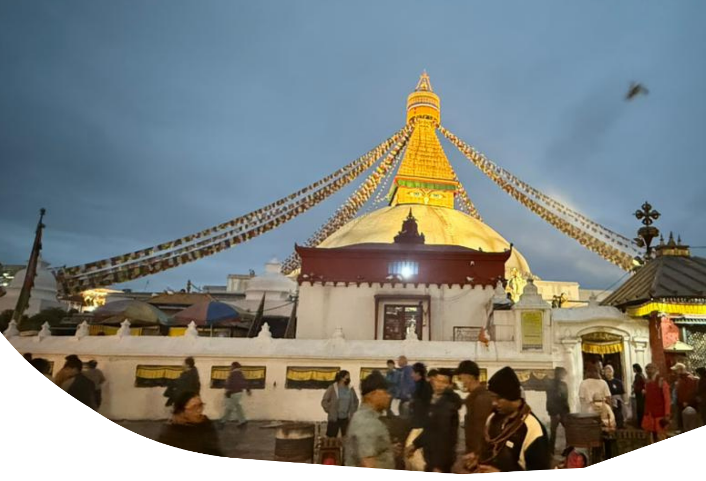
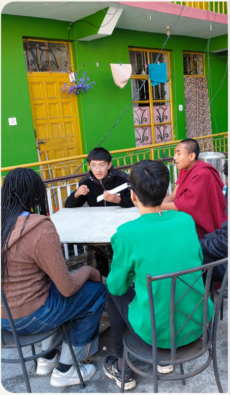
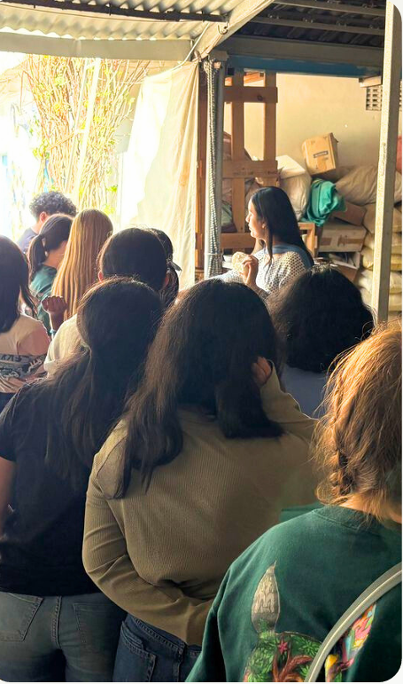

At Experiential Pathways, we believe in the transformative power of experiential learning, which serves as the cornerstone of all our educational travel programs. This approach is not just a teaching method for us; it's a dynamic way to foster active citizenship and personal growth in young people. Through student learning by doing, discovering, reflecting, and applying, we empower students to build critical life skills. Our programs offer real-world experiences that enhance communication skills, boost self-confidence, and strengthen decision-making abilities by encouraging students to tackle and solve real-world challenges. At Experiential Pathways, we are committed to providing meaningful learning experiences that go beyond the classroom, helping students grow as informed, responsible, and engaged global citizens.
Experiential learning is a powerful educational approach that emphasizes learning through direct experience. At Experiential Pathways, , we believe in immersing students in hands-on activities and real-world contexts, allowing them to actively engage in their learning journey. Rather than relying solely on traditional classroom instruction , our experiential learning programs integrate reflection, application, and active experimentation to foster deeper understanding. Experiential learning cycle, students first engage in concrete experiences, such as immersive activities or simulations.
They then reflect on their experiences, make connections with existing knowledge, and conceptualize new insights. Finally, students apply their newfound understanding through active experimentation, which feeds back into further learning opportunities, creating a continuous cycle of growth.
Our five-stage experiential learning model—Focus, Action, Support, Feedback, and Debrief—ensures a holistic learning experience, with feedback and support playing a crucial role throughout the process. By engaging students in real-world challenges, our programs enhance critical thinking, communication, and teamwork skills, while promoting personal development and social-emotional growth.
This approach not only increases motivation and knowledge retention but also cultivates the skills necessary for navigating complex global challenges. At Experiential Pathways, we're committed to providing transformational learning experiences that empower students to become active, engaged global citizens.

Industry research consistently highlights the profound benefits of experiential learning for school students, demonstrating its positive impact on student development. By engaging in diverse and enriching hands-on learning opportunities, students experience:
Increased motivation and engagement: Active involvement in real-world tasks sparks curiosity and drives enthusiasm for learning.
Enhanced critical thinking skills: Through practical application, students retain information more effectively and strengthen their skill sets.
Improved communication and teamwork: Experiential learning challenges students to solve complex problems, fostering stronger analytical and decision-making skills.
Social and emotional growth: The collaborative nature of experiential learning promotes emotional intelligence, empathy, and resilience, supporting students' personal development.
Enhanced teamwork and communication skills: Working alongside peers in dynamic environments helps students improve collaboration and communication abilities.
Transformational learning experiences: The immersive nature of experiential learning fosters lifelong skills, shaping students into confident, responsible global citizens.

we integrate these benefits into every program, ensuring that students not only excel academically but also grow socially and emotionally, preparing them for success in the real world.
A cycle of active engagement in concrete experiences and reflection that comes in many forms.
A cycle of active engagement in concrete experiences and reflection that comes in many forms.
Experiential Pathways provides an array of experiential learning activities through our school travel programs, emphasizing outdoor education, service learning, and cultural immersion. Our program leaders guide students through the four stages of the experiential learning cycle, using various reflective activities to help them test and apply new understandings through hands-on experiences. Once students return home, they can continue their learning journey with a comprehensive suite of post-program activities designed to sustain and extend the learning cycle well into the future.
At Experiential Pathways, we understand that addressing global challenges like inequality, climate change, and environmental decline requires values-driven leadership and institutions. Our educational travel programs are designed to nurture the essential Social and Emotional Learning (SEL) themes that empower students to become responsible, compassionate global citizens. Through hands-on experiences, students develop:
Compassion: Demonstrating kindness and respect for people, animals, and the environment, fostering a deep sense of empathy for diverse perspectives.
Connection: Understanding the interconnectedness of society and nature, promoting collaboration for positive change.
Critical Thinking: Analyzing global issues like inequality and injustice, while connecting local struggles to broader systemic challenges.
Curiosity and Open-Mindedness: Cultivating a passion for exploration and embracing diverse ideas and experiences.
Intercultural Competency:Navigating different cultures, fostering effective communication, and engaging in collaborative decision-making.
Leadership and Resilience: Building the determination to overcome obstacles, make informed decisions, and take calculated risks.
Lifelong Learning and Growth Mindset: Encouraging continuous personal growth and a belief that skills can be developed through effort and dedication.
Reflexivity: Reflecting critically on one's place in the world and understanding the impact of personal actions.
Teamwork: Collaborating effectively, managing conflict, and working toward the collective good.
By integrating these principles, our student travel programs prepare young people for global citizenship and help them acquire the skills needed to tackle today's pressing issues. With a focus on experiential learning, our programs provide transformative, real-world learning experiences that go beyond traditional education and foster a mindset of sustainable growth.